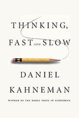
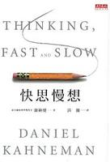
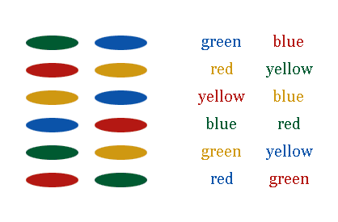
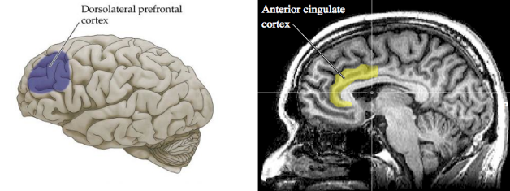
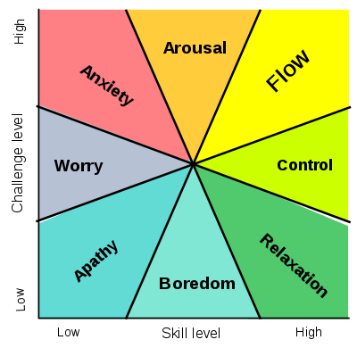

“心理学”相关的博文，去年（2018）写得少。经热心读者在评论区提醒，今天特来发一篇。
开博10年来，俺写过不少心理学相关的博文，其中多次提到了【独立思考】的重要性。俺特别强调过：“独立”是“自由”的前提，没有“独立思考”就没有“思想自由”。
虽然很多人都知道要“独立思考”，但大部分人在大部分时间里都【无法】做到独立思考。所以，今天这篇就来聊聊这个话题。
网上充斥着大量【不靠谱】的心理学相关文章。其中尤以“成功学/励志类/心灵鸡汤类”居多。关于“成功学”，多年前已经写过一篇《成功学批判——简述其危害性及各种谬误》。在那篇博文中，俺指出了“【伪】心理学”的谬误。
如何识别“【伪】心理学”捏？俺的网盘上分享过一本比较通俗的心理学著作《对“伪心理学”说不》。此书还有另一个中译本叫做《与众不同的心理学——如何正视心理学》。如果你想了解“【正宗】心理学”和“【伪】心理学”的差异，这是一本很好的入门读物。
此书的作者“基思·斯坦诺维奇”（Keith Stanovich）属于【顶级】的心理学家（本文后续章节还会再次聊到他）。
本文要讨论的内容，绝大部分都【不是】俺个人观点，而是出自专业的心理学家的研究成果，并且都有相应的心理学实验作为论据。
为了让本文比较【靠谱】，本文中提到的几本心理学著作，都出自【专业】心理学家的手笔。
其中有一本书会被多次引用，那就是《思考，快与慢》。在这里，俺顺便介绍一下这本书。
 
此书洋文名称是《Thinking, Fast and Slow》，还有一个中文译名叫做《快思慢想》。
首先，它的作者丹尼尔·卡尼曼（Daniel Kahneman）属于【世界级】的心理学家，并且还是2002年【诺贝尔经济学奖】得主。可能很多读者会奇怪——为啥心理学家得了“经济学奖”。那是因为他在心理学领域的贡献深刻影响了行为经济学。关于丹尼尔·卡尼曼的更多介绍，请参见维基百科的“这个链接”。
其次，虽然作者是“学院派”，但书的内容还是很通俗易懂滴。也就是说，你【不】需要具备太多的专业理论知识，也可以通读全书。
除了刚才的《思考，快与慢》，在本文后续章节还会提到很多著作（包括“心理学”和“非心理学”的），大部分都已经分享到俺的网盘。
如果想下载电子版，请猛击如下链接，打开【电子书清单】。在每个【大类】的标题下方，都标有“微软网盘”的链接和“BT sync”的同步密钥。
https://github.com/programthink/books
俺首先要聊的是“大脑的两种运作模式”——这也是《思考，快与慢》一书贯穿始终的话题。
《思考，快与慢》开头部分（第1章），其标题就是：
例1：给出一张【人脸照片】，绝大多数人都可以在一秒钟之内判断出人脸的表情；也可以在一秒钟判断出这张人脸是不是自己的熟人。
例2：给出一个随意的【两位数乘法】，除非是受过专门训练或者是速算天才，绝大多数人都【无法】在一两秒之内算出答案。
这两个场景，前者明显更难，后者更容易。作为一个（曾经的）程序猿，俺可以很负责任地告诉你——假如要写程序解决这两个问题，前者的程序肯定比后者复杂得多（高出好几个数量级）。即便抛开计算机编程不谈，只从【信息论】的角度分析这两个问题，“人脸识别”需要处理的信息量也远远大于“两位数乘法”。
所以，这就引出一个疑问——为啥咱们的大脑对于“人脸识别”这种相对复杂的问题，可以轻松且快速地搞定；而对于“两位数乘法”这种相对简单的问题，却显得缓慢且费力。
上述这个问题，其实并不容易回答。最近几十年，得益于心理学和脑神经科学的飞速发展，咱们开始能明白这其中的奥妙。关键在于——大脑有两种【截然不同】的处理机制。心理学家称之为“系统1”和“系统2”。
“系统1”解决问题的速度很快，但它只能处理【少数类型】的问题；对于“系统1”无法解决的问题，会转交给“系统2”去处理。“系统2”能处理的问题，领域【更广】，但“系统2”的运作非常【慢】且非常【吃力】（相比“系统1”而言）。
“系统1”可以解决“人脸识别”，但是【无法】解决“复杂四则运算”。
顺便说一下：
心理学家基思·斯坦诺维奇最早提出了“系统1/系统2”这两个术语。他也就是本文开头提到的那本《对“伪心理学”说不》的作者。关于此人的更多介绍，可参见“这个维基百科链接”。
大脑的两种运作机制，并【不】仅仅是理论假设。在心理学和脑神经学相关的领域，已经获得了相当多的试验证据，表明大脑存在两种完全不同的运作机制。
心理学家埃克哈特·赫斯（Eckhard Hess）指出了：【瞳孔】可以反应出大脑处于哪一种运作机制（注：《思考，快与慢》的第2章专门讨论了这个话题）。
除了观测瞳孔，还可以通过其它物理手段（比如：功能性磁共振成像/fMRI）观测脑部的活跃区域，也可以看出大脑在不同的运作机制下，大脑皮层出现不同的活跃区域（关于“大脑活跃区域”的成像，后面会举例）
刚才提到——“系统1”只能处理【少数类型】的问题。哪些领域是它擅长的捏？下面列一个简单的清单（该清单仅用于举例，不完整）：
前面提到：“系统1”擅长的领域是【比较少】滴，更多领域的问题必须由“系统2”来完成。再列一个清单（该清单仅用于举例，不完整）：
咱们先来聊一下这两个系统的【差异】（表象）；然后再去探讨这两个系统的运作机制（本质）。
在上一个章节，俺列举了两个系统的分工。聪明的读者应该已经发现了——
“系统1”擅长的领域通常是——【无意识】的活动；
而“系统1”【不】擅长的领域（只能靠“系统2”完成的）通常是——【有意识】的活动，并需要在一段时间内保持【注意力集中】。
前一个小节提到了：“系统2”要想完成某个任务，需要保持【注意力集中】。面对的任务越困难，注意力集中的程度就越高。而为了保持注意力高度集中，就需要动用【自控力】。为了长时间地维持自控力，你就需要消耗【能量】
注：此处所说的【能量】就是物理学中的那个概念；体现在生理学上，就是【血糖水平】（血液中的葡萄糖含量）
关于“注意力/自控力”与“能量损耗”的相关性——已经有很多【专业的】心理学书籍和实验证明了这点。除了《思考，快与慢》这本书，还有一个心理学家罗伊·鲍麦斯特（Roy Baumeister）专门写了一本书叫《Willpower》（中译本书名《意志力》），详细谈这个话题。
考虑到本文的篇幅，俺只简单介绍几个心理学实验：
实验1
两组被试，一组从事轻松的脑力任务，另一组从事复杂的脑力任务。任务完成后，让他们自选免费点心，从事【复杂任务】那组人，有【更高比例】选择了“甜食”，并且他们的血糖水平也比另一组【更低】。
实验2
两组被试，一组是饥饿状态，一组正常状态。从事【同样的】复杂脑力任务。饥饿组的平均成绩显著【低于】正常组。
实验3
两组被试，一组是饥饿状态，一组正常状态。从事一项【不可能完成】的任务，然后测量他们坚持了多久才放弃。饥饿组的平均时长显著【低于】正常组。
上述这些实验反映出：
1. “系统2”从事复杂任务会显著影响（降低）血糖水平
2. 血糖水平（的高低）会显著影响“系统2”从事复杂任务的效率和能力
3. 血糖水平（的高低）会显著影响“自控力/意志力”
前面提到了“自控力/意志力”与“能量/血糖水平”的相关性——“血糖水平下降”会降低“自控力/意志力”。
但是，当你的“自控力/意志力”彻底消耗掉之后，如果（通过进食）立即恢复“血糖水平”，“自控力/意志力”并【不会】立即恢复到峰值（它的恢复是一个较缓慢的过程）。
另外，除了血糖水平，还有很多因素会影响你的“自控力/意志力”。比如当你的情绪很差的时候，去从事某个复杂任务，就更容易放弃（说明“自控力/意志力”会受到情绪的影响）；另外，“睡眠不足”或者“喝醉酒”也会降低“自控力/意志力”。
从以上介绍可以看出，“自控力/意志力”是一项【宝贵资源】。这点非常重要，希望大伙儿牢记！（后面还会再提及这点）
“系统1”的启动非常快。就拿前面提到的“骑车/开车的例子”。面对【突然出现】的障碍物，“系统1”会在一秒（甚至零点几秒）之内作出反应。
相比“系统1”而言，“系统2”的启动非常慢。经常听到有句话叫做【进入状态】，用来形容“系统2”非常恰当。
而且“系统2”的【进入状态】的耗时还与你想要处理的任务的复杂程度有关。如果“系统2”只是处理【简单】任务，“进入状态”的耗时偏【短】；反之，要处理非常复杂的任务，“进入状态”的耗时就偏【长】。你可以形象地理解成——为了处理复杂任务，“系统2”需要达到某种【满负荷运转】的状态。
（注：“单任务/多任务”是 IT 行业中关于操作系统的术语，俺在这里借用一下，表示“大脑中两个系统的差异”）
“系统1”是典型的【多任务】系统
对于某个熟练骑自行车的人，当他/她在骑车的过程中突然听到某个熟悉的音乐，头脑中可以立即联想到歌名。在“联想到歌名”的同时，依然可以保持自行车的平衡。也就是说，“系统1”能【同时处理】这两个任务，并且“系统1”在多任务的状态下，任务之间【不】互相干扰。
“系统2”是典型的【单任务】系统
作为对比，“系统2”同一个瞬间只能处理【单个】任务。如果让“系统2”同时进行两个复杂任务，至少有一个任务会搞砸（通常是两个都搞砸）。关于这点，也已经得到心理学实验的证实。
俺猜到某些读者会反驳说：马戏团的杂技演员能同时进行多个复杂任务。
来简单解释一下：杂技演员通过长期训练，已经把复杂任务转化为“系统1”的固有模式。所以从表面上看，杂技演员好像同时进行多个复杂任务，但其实最多只有一个（甚至没有）任务在占用“系统2”。
前面提到：“系统2”的运作需要较高程度地集中注意力——你必须动用“自控力/意志力”来做到这点——在此过程中，你的“自控力/意志力”不断损耗。心理学家罗伊·鲍迈斯特（Roy Baumeister）所做的实验表明——这个过程会让人很不爽（很辛苦）。《思考，快与慢》一书称之为【认知负担】。
相比之下，“系统1”的活动是【无意识】滴——不需要集中注意力，也就【不】存在“认知负担”。
基于上述差异，可以把这两个系统分别称之为“放松型”和“紧张型”。“放松的系统1”也就是俺在博客中经常提到的【心理舒适区】（Comfort Zone）。
某些读者会问：能否既动用“系统2”又摆脱“认知负担”？
幸运的是，这种“鱼和熊掌兼得”的奢望是有可能实现滴！（在本文末尾介绍“心流”时，会谈到这个话题）
先来看两张图：

对【左图】，依次说出每个椭圆的颜色，【很容易】——此时只动用了“系统1”。
对【右图】，依次说出每个单词的颜色，【很困难】——因为单词的“含义与颜色”相冲突，你需要动用“自控力/意志力”去【抑制】“系统1”的下意识反应，同时调动“系统2”以遵循给定的规则。这会导致大脑出现紧张和压力。
上述的“认知负担”得到了 MRI（核磁共振成像）的验证（如下图）

（MRI 成像的照片）
（注：以上案例来自斯坦福大学一篇讨论“神经科学”的文章，出处在“这里”）
（本文发布后，在与读者的讨论过程中发现某些读者会对“系统1/系统2”这个术语产生歧义，特补充这个章节）
这种误解很普遍，俺先来澄清一下：
当初为啥用“系统1”这个术语，而【不】用“感性系统”或“XX系统”，其中一个原因就是为了避免这种误解。
同样的道理，也不能把“系统1 ＆ 系统2”简单理解为“直觉系统 ＆ 思考系统”。
俺来澄清一下：
这两个系统，并【不是】简单的层次关系。两者之间的关系要复杂得多。而且关于这两者的关系，还有待于心理学的进一步研究。
俺在上一个小节说了：
暂时还【不能】断言这两者是简单的依赖关系。
本文中提到：“系统1的运作”和“系统2的运作”，在大脑中会有不同的活跃区域（脑皮层）。
这很容易让某些读者误以为这两个系统分别对应了大脑中的两个物理区域。
但实际情况没有这么简单。比如说：可能某个区域是两个系统都会用到的。可能某个区域在其中一个系统运作时，活跃程度较高；而在另一个系统运作时，活跃程度较低。
由于存在这方面的误解，某些心理学家改用另一种术语——“1型处理过程”和“2型处理过程”。
俺认为后面这个术语，会更准确。但考虑到“系统1 ＆ 系统2”已经广为流传，本文中还是继续用原先的术语。
再次回顾一下前面章节列举的“系统1能干的事情”。你会发现：这些事情都可以固化为某种【模式】。
为了说清楚“系统1”的【模式】，咱们再拿乘法运算来说事儿。
绝大多数人都【可以】在一秒钟内说出
同样是乘法运算，为啥差异这么大捏？因为
为啥围棋高手可以【立即】识别出“某个棋形属于XX定式”，道理也类似。因为他们经历了成千上万的实战或打谱，那些常见定式已经成为头脑中的【固有模式】。
“系统1”的模式，有些是先天的（与生俱来的），有些是后天的（习得性的）。
比如刚才提到的“识别围棋定式”，显然是后天强化的；而像“人脸的表情识别”就属于先天的——比如：有些新生婴儿的情绪会受到父母脸部表情的影响。
顺便说一下：
在哲学的“认识论”领域中，“与生俱来”也称之为“先验的”；“后天习得”也称之为“经验的”。
俺之前在《股市点评：为啥大多数散户必定亏钱？——心理学层面的分析》中提到过【进化心理学】，当年博文中的一段话，拿到这里依然适用（如下）：
同样的道理——原始社会中根本就【不】需要进行“两位数乘法”，所以“系统1”压根儿就【没有】去发展（演化）这种能力。
引申阅读：
俺网盘上分享了一本《进化心理学——心理的新科学》。对这个领域感兴趣的同学，可以去瞧一瞧。
在《思考，快与慢》一书讨论了很多“系统1”导致的认知谬误。俺挑选其中几个让大伙儿瞧一瞧：
认知谬误经常被利用来进行【洗脑】。俺博客上已经写了很多【反洗脑】的扫盲教程，挑选几篇列在下面，供参考：
《扫盲逻辑谬误——以五毛言论为反面教材》
《比“欺骗”更有效的洗脑——基于【双重思想】的思维控制》
《比“欺骗”更狡猾的洗脑——基于【真实数据】进行忽悠》
《聊聊洗脑和脑残——分析“脑残的起源”和“脑残的觉醒”》
《如何用互联网进行“反洗脑”和“政治启蒙”——分享若干个人经验》
俺的网盘上分享了《清醒思考的艺术（上篇）、明智行动的艺术（下篇）》，里面汇总了很多思维谬误。
提醒一下：此书的英文原著是《The Art of Thinking Clearly》。中文版出了两本，分别对应原著的前后两部分。
目前对“系统2”的研究还不够，关于它的很多内部运作机制也还【没】完全搞明白。
所以在这个章节中，俺只介绍少数重要的，并且（在科学研究中）比较有定论的东东。
关于这个论点，俺直接引述卡尼曼在《思考，快与慢》中所说的话：
在之前的章节，俺已经提到了【进化心理学】，咱们继续用它来解释“系统2”的【惰性】。
在漫长的原始社会过程中，经历了狩猎业、采集业、农业。在狩猎业和采集业，食品是严重匮乏滴；农业出现之后，食品问题有所缓解，但还远远算不上充足。而前面俺已经提到——“系统2”是【耗能】大户。于是，“食品匮乏”与“系统2消耗能量”就构成一个尖锐矛盾。解决方法包括如下：
1. 经常碰到的任务，尽可能由“系统1”来完成（比如前面多次提及的“人脸识别”）
2. 即使碰到某个任务，“系统1”搞不定，需要动用“系统2”。“系统2”也要【省着点用】——这也就是卡尼曼在书中对“系统2”的评价：
本文前面提到的那位心理学家“基思·斯坦诺维奇”（就是最早指出大脑具有两种系统的那位），在他的著作《理性和反思性思维》（Rationality and Reflective Mind）中对【系统2】作了进一步探讨。他认为“系统2”包含【两种思维能力】。基思·斯坦诺维奇分别称之为“算法”和“理性”。但是俺觉得“算法”一词太抽象，所以在本章节中，俺称之为“智力因素”和“理性因素”。
所谓的“智力因素”
指的是——能够进行复杂的计算（此处所说的“计算”是广义滴，【不仅仅】指数学计算，还包括：推理、分析、归纳......）。这个因素比较容易理解，俺就不展开啦。
所谓的“理性因素”
如果换一种说法就是指：“系统2”的【勤快程度】。根据基思·斯坦诺维奇的理论——如果“系统2”的理性水平【弱】，在解决问题时就更容易接受一些【直觉型】的答案；反之，如果“系统2”的理性水平【强】，即使发现了【直觉型】的答案，还会再次进行【确认与反思】。
仅仅是这样描述，俺估计很多读者还是不太明白“理性水平的强弱”到底有啥区别。所以俺从《思考，快与慢》的第3章里面剽窃一个例子（引文如下，粗体是俺标注滴）：
本章节末尾，简单总结一下。俺想要强调的是——规避认知谬误，其中一个关键在于“系统2”的【理性程度】（勤快程度）。
当然啦，“扫盲认知谬误的知识”，也是很重要滴。比如俺曾经写过一篇《扫盲逻辑谬误——以五毛言论为反面教材》。但是大部分人，即使完全掌握了这些认知谬误，还是会落入相关的思维陷阱。为啥捏？因为大部分人就算熟练掌握认知谬误，还是无法显著提升“系统2”的【理性程度】（勤快程度）。
那么，如何提升“系统2”的【理性程度】（勤快程度）捏？在本文最后3个章节，俺将分享若干个人经验。
如果你有耐心，一直看到这里。恭喜你，咱们要开始切入正题啦！
由于“系统1”是根据【固有模式】作出反应/反馈；所以，“系统1”的运作【没资格】称之为“独立思考”。换句话说，只有当你运用“系统2”来解决问题的时候，才有资格称之为【独立思考】。
通过本章节的阐述，当你理解了“运用系统2的难度”；自然也就理解了“独立思考的难度”。
俺在前面已经提到：“系统1”的运作是【放松型】滴。当你的大脑中只启动“系统1”，你就处于【心理舒适区】（Comfort Zone）。
“心理舒适区”具有某种【成瘾性】——你停留于其中的时间越久，你就越难以摆脱它；反之亦然。
所以，“心理舒适区”会导致一种【马太效应】（该效应俗称“两极分化”）——越经常思考的人，就越来越善于思考；越少思考的人，就越来越难以思考。
“短路原则”有时候也被称为“最省力原则”（在《思考，快与慢》中也有提及）。它指的是——如果某个任务可以由“系统1”搞定，就不会再让“系统2”参与。
为啥会有“短路原则”捏？如果你已经很熟悉这两个系统的差异，就能发现“短路原则”源自于——
1. 基于【速度】的因素
“系统2”的速度太慢。既然“系统1”已经搞定了，大脑觉得没必要再动用“系统2”啦。
2. 基于【节能】的因素
“系统1”是【无】意识滴，不需要动用“注意力/自控力”。而“系统2”需要动用“注意力/自控力”，会显著消耗能量。
“短路原则”可以用来解释——摆脱偏见很难。当你形成了某种【根深蒂固】的偏见，通常说明这种偏见已经成为“系统1”里面的固化模式。你接收到的信息如果匹配该模式，直接被“系统1”处理掉了（此时“系统2”被绕过）。
关于这个方面，俺以【锚定效应】来举例（因为很多读者不太了解此效应，趁机扫盲一下）。
这个效应指的是：当你思考某个问题时，你会很随意地从周围环境中获得某个事物（可能是完全无关的事物）充当参照物（也就是“锚点”）。
下面是某个心理学实验：
对 A、B 两组被试，让他们填写一份问卷。问卷上有一系列历史名人，要求填写这些名人大概死于几岁。参与测试的人都知道这些名人，但未必记得他们的死亡年龄，只能进行大致的估计。
对于“A组”，他们的座位上标有一个随机数字。这个数字大概是几百或几千（很显然与年龄没啥关系）；对于“B组”，座位上没有标数字。
测试的结果，“A组”的问卷，对年龄的猜测显著高于“B组”。测试之后，再去询问“A组”的测试人员，相当比例的人【没有】意识到自己的座位上标有数字。
从这个测试可以看出：“系统1”在下意识（无意识）的情况下收集到的信息，也影响到了“系统2”。
如果你以为“锚定效应”只出现在自己陌生的领域，那你就低估了它的影响力。另一个实验选择的“被试”来自房地产行业多年的从业人员，让他们对某个房产进行估值。同样是分为两组进行对照，同样观察到类似的“锚定效应”。
也就是说：即使在你非常熟悉的领域，也可能受到锚定效应误导。
“环境的干扰”会打断人的思路，这已经是老生常谈。俺想要强调的是——“环境干扰”对不同类型的思维活动，破坏性也是不同滴！
技术大牛 Paul Graham 在《黑客与画家》（Hackers and Painters）一书中，提到了“不同工种”对干扰的忍受程度，引文如下：
引申阅读：
在下面这本书中，用大量篇幅谈了“排除干扰”的话题。此书虽然出自软件开发行业，但其中所谈的管理之道，适用于任何一个需要【复杂脑力活动】的行业。俺本人从事管理工作之后，从此书中获益甚多。
《人件》（Peopleware——Productive Projects and Teams）
有些复杂的思维活动需要持续一段比较长的时间。如果你的时间是【碎片化】的，就难以进入这种状态。
这也就是，为啥很多程序员是夜猫子。因为在夜深人静的时候，不太有人来打扰，可以在长达几个小时里，专注地编码。（俺当年做程序员的时候，也是如此）
关于“系统2”的理性程度（勤快程度），前面已经说过了。有些人的“系统2”更加勤快，这类人出现【直觉型错误】的概率会显著低于那些“系统2”更加懒惰的人。
“系统2”的勤快程度，就跟“肌肉”一样是可以锻炼的。你频繁地动用“系统2”进行思考（尤其是复杂思考），“系统2”就变得活跃起来。
至于如何锻炼，方法非常多。下面俺举几个例子，供参考。提醒一下：大伙儿要对“俺的例子”进行【举一反三】。
消遣性的内容，通常不需要动用“系统2”——这也就是“消遣性”一词的缘由。如果某个内容需要频繁动用“系统2”，就会造成【认知负担】，在这种情况下，你就无法达到“消遣”的效果。
所以，对消遣性的内容，偶尔看看问题不大；但如果你把大量的业余时间用来阅读消遣性内容，对“思维能力”有害无益——请回顾刚才提到的：“心理舒适区”【成瘾性】
比如俺本人就很少看消遣性内容（关于这点，曾经在博客评论区交流过）
为了经常锻炼自己的思维能力，你需要多看一些【费脑筋】的内容。
说到这个话题，俺强烈建议：多接触和学习【不同领域】。这么干简直可以称得上是【一石 N 鸟】，其好处至少包括：
1. 学习【新】领域，肯定要动用“系统2”——锻炼了思维能力。
2. 拓宽了你的知识面。
3. 如果你挑选【恰当的】领域进行学习，还可以增强【个人竞争力】。
4. 你学习的新领域越多，你就越容易掌握【学习的技巧】；今后再学习其它新领域，效率就会更高。（这是一种【良性正反馈】）
在下面这篇博文中，俺推荐了《如何阅读一本书》。这是一本【关于书籍的书籍】，很重要！
《＜如何阅读一本书＞——书评及内容纲要》
此书中提到了阅读的“4个层次”，【由低到高】分别是：基础阅读、检视阅读、分析阅读、主题阅读。
这4个层次有依赖关系——“后面的层次”要依赖“前面的层次”。俺建议大伙儿多进行【后2个层次】——“分析阅读”和“主题阅读”。
因为后面两个层次，会更多地动用“系统2”。并且后面两个层次也更有利于你学到东西。
不爱思考的人有一个特点：每当听到与自己冲突的观点/意见/理论，就直接忽略掉。
如果你想提升思维能力（尤其是“系统2”），当你听到与自己冲突的观点/意见/理论，你应该【仔细想一下】，对方是否存在某种谬误？在寻找对方谬误的过程中，你不要只满足于找到【某个】谬误，要尽力找到【全部】谬误。
在批判性思维的理论中，这种称之为“【弱】批判思维”。
当你听到与自己冲突的观点/意见/理论，在完成“弱批判思维”之后，还要再反问一下：有没有可能对方是正确的，而自己是错误的？
“对【自身】的批判性思维”，称之为“【强】批判思维”。做到这点【很难】——因为大多数人【不愿意质疑和反思自己】。
但如果你达到了这个 level，好处会很明显——你就能更多地消除自己的弱点和缺陷。
关于“批判性思维”，可以参考俺的网盘上的《学会提问——批判性思维指南》。
此书的开头部分就提到了“弱批判思维”和“强批判思维”，另外还介绍了各种思维谬误。
关于“学习新领域”和“拓展知识面”，可以参考《如何完善自己的知识结构》
在如今的这个互联网时代，很多人都知道“信息的重要性”。可惜的是，大多数人忽略了“【媒介】的重要性”。
有一个传播学领域的大牛叫“马歇尔·麦克卢汉”，他的代表作《理解媒介——论人的延伸》（Understanding Media——The Extensions of Man）是传播学领域【划时代】的经典著作。贯穿此书的核心观点是【媒介即信息】（The medium is the message）。
针对这句话的论述，足以写好几个大部头著作。为了避免篇幅太长，俺只【简单扫盲】他这个观点——
在麦克卢汉之前，传播学的学者只是关注媒介【内容】对受众的影响；麦克卢汉这个大牛率先指出：媒介的【形式】非常重要（甚至可能比内容更重要）。
关于“媒介【形式】的重要性”，可以从很多角度来讨论；在本文中，俺只从【认知心理学】的角度来分析。下面这句话是俺要特别强调滴！
有的媒介【形式】会促进你的思考
有的媒介【形式】会抑制你的思考
假设同一本书，采用两种【形式】来呈现——其一是“纸版书或电子书”；其二是“有声读物”。对于前者，你用【肉眼】阅读它；对于后者，你用【耳朵】听它朗读。这时候，差别就体现出来啦！
在【肉眼阅读】的时候，你是【主动】滴。因此，当你出现理解上的困难，或者当你需要作进一步的思考，可以调整阅读速度。
而使用【有声读物】，你是【被动】滴。为了跟上阅读节奏，大脑会【抑制】“系统2”的启动（前面说了，它启动比较慢）。所以，对于【有声读物】这种媒介，你很难在“听的过程中”进行【深入】思考。最多只能进行一些肤浅的思考。
估计某些读者会反驳说：在听“有声读物”时，也可以按“暂停键”。
俺来解释一下：
1. 每个人对信息的处理速度会有差异。甚至同一人对不同内容的处理速度也有差异。这个速度差异，靠“暂停键”【无法】解决
2. 如果你时刻保持警惕，准备随时按下“暂停键”，此时你已经分摊了一部分注意力。再次强调：“自控力/意志力”是一项【宝贵资源】（尤其当你需要复杂思维时）
说完“有声读物”，再来说“视频”。某些聪明的读者在看前面一段时，应该已经联想到了——【视频】这种媒介与【有声读物】是类似滴——观看视频时，你也处于【被动】状态。除了【被动】导致的弊端，“视频”这种媒介形式还有其它很多弊端，具体请参见《为啥俺很少看视频？——兼谈“视频”与“文本”在认知心理学方面的差异》
说完【被动型认知】的缺点，再来说说【碎片化】的缺点。这个缺点在社交网络（SNS）上尤其明显。
当你阅读碎片化信息时，注意力不断地在各个信息之间跳转。这样一种阅读习惯，会弱化你【保持注意力】的能力。久而久之，有可能导致“阅读障碍”——因为无法长时间保持注意力，难以阅读【长篇】内容（尤其是长篇且复杂的内容）。
引申阅读：
刚才谈的是互联网导致的【碎片化】问题。下面这篇博文对比了几个媒介【形式】的优缺点。
《“传统博客”过时了吗？——兼谈各种媒介形态的优缺点》
为了避免有人抬杠，再次强调：当俺说“书籍是更好的东西”，指的是书籍这种媒介【形式】，不是指“内容”。
书籍在【认知】方面的优势【至少】包括如下几点：
1、主动性
（关于这点，刚才已经讨论过）
2、系统性
在前面章节，俺已经强烈建议：学习新领域属于“一石N鸟”的好事儿。当你想要掌握某个新领域，需要对该领域的知识有一个【系统性】的了解。
这方面，书籍明显优于其它媒介形式。绝大部分基于网络的媒介形式（邮件、聊天工具、博客、论坛、问答网站......）都难以帮助你系统性地掌握某个领域（尤其是比较复杂的领域）。
越是复杂的领域，书籍在【系统性】方面的优势就越明显。
3、深刻性
某些话题具有一定的深度/复杂度，很难用简短的文字讨论清楚。在这种情况下，微博（microblog）存在字数限制，缺点就非常突出；博文没有【显式】的字数限制，这方面就明显优于微博。但博文存在【隐式】的字数限制。因为很少有博主能写出【长篇博文】（俺属于极少数经常写长篇原创博文的博主）。
论坛或问答网站，情况也类似——存在【隐式】的字数限制。
与上述这些媒介形式相比，书籍完全【没有】字数限制。
引申阅读：
《＜如何阅读一本书＞——书评及内容纲要》
有句格言叫做：兴趣是最好的老师。
在本文的最后一个章节，俺来谈谈“兴趣”对于提升思维能力的作用。
对“兴趣”一词，有很多不同的理解（甚至误解）。
为了避免理解上的分歧，建议你先看一下《什么是【真正的】兴趣爱好？以及它有啥好处？》。
前面俺提到了“认知负担”。这种负担会消耗“自控力/意志力”。（俺第 N 次强调：“自控力/意志力”是一项【宝贵资源】）
兴趣的好处在于——当你从事自己感兴趣的活动，你会获得某种【快感】（快感来自于大脑分泌的【多巴胺】这种神经递质）。“多巴胺带来的快感”有助于抵消——认知负担造成的紧张感和心理压力。如此一来，你的宝贵资源就得到节约。
那么，啥时候需要动用“自控力/意志力”这个宝贵资源捏？
前不久（2019年初）正好与读者在评论区讨论到此问题，下面是俺个人观点：
那些【简单】的事情（不需要复杂思维，已经让“系统1”包办了），本来就不太消耗“自控力/意志力”；
那些【不重要】的事情，不值得你动用这项资源；
那些【重要】且需要【复杂思维】的事情，可以分为两类：其一是“你感兴趣的”；其二是“你不感兴趣的”。
为了让“自控力/意志力”的效果最大化，你只在【第二类】事情动用这项资源；对于第一类事情，让“多巴胺”来帮你抵消“认知负担”造成的压力。
（简单地说）“心流”是指：从事某个活动时，达到【忘我】的境界。
心流的【好处】在于——当你处于这种状态，【没有】认知负担，而且还会有一种超爽的体验（高度的兴奋感和满足感）。
在古代的佛教或瑜伽中有类似的描述。现代心理学已经对这种现象进行了研究。“心流”（Flow）一词就出自心理学家米哈里·契克森米哈伊（Mihaly Csikszentmihalyi）——此人是研究这种现象的权威。
米哈里·契克森米哈伊给出了下面这个【“技能-挑战”模型】。如图所示：当你在某个领域达到【高水平技能】，同时你还面临该领域【高难度任务】的挑战，就有【可能】达到“心流状态”（此处说的是“可能性”而不是“必然性”）。

（此图剽窃自维基百科关于“心流”的介绍）
俺想要强调的是——“心流”与兴趣的关系。你对某个领域的兴趣越大，你越有可能在上述模型的两个维度同时达到 high。在【没】兴趣的情况下，或许也能达到心流的状态，但俺认为更【不】容易出现。
引申阅读：
考虑到本文已经很长，关于“心流”就不细聊啦，感兴趣的同学自己去看如下两本书，其作者就是刚才提到的那位“米哈里·契克森米哈伊”。
《心流——最优体验心理学》
《发现心流——日常生活中的最优体验 》
前面两个小节分别提到了“多巴胺”和“心流”。这两者东西都有助于【消除认知负担】。
消除这种负担之后，（在你感兴趣的领域）就更容易进行【长久】且【复杂】的思考。于是你在这个领域中的能力提升就会更显著。如此一来，你对这个领域的兴趣会被进一步强化（然后又带来更多“心流、多巴胺”）
这就是俺所说的【良性正反馈】。
俺博客上，和本文相关的帖子（需翻墙）：
《学习与人生——700篇博文之感悟》
《时间与人生——跨入本世纪20年代的随想》
《如何完善自己的知识结构》
《成功学批判——简述其危害性及各种谬误》
《什么是【真正的】兴趣爱好？以及它有啥好处？》
《为啥俺不常用微博？——兼谈时间管理心得》
《为啥俺很少看视频？——兼谈“视频”与“文本”在认知心理学方面的差异》
《“传统博客”过时了吗？——兼谈各种媒介形态的优缺点》
《扫盲逻辑谬误——以五毛言论为反面教材》
《比“欺骗”更有效的洗脑——基于【双重思想】的思维控制》
《比“欺骗”更狡猾的洗脑——基于【真实数据】进行忽悠》
《聊聊洗脑和脑残——分析“脑残的起源”和“脑残的觉醒”》
《如何用互联网进行“反洗脑”和“政治启蒙”——分享若干个人经验》
《思维的误区：从“沉没成本谬误”到“损失厌恶情结”》
《思维的误区：幸存者偏见——顺便推荐巴菲特最著名的演讲》
《股市点评：为啥大多数散户必定亏钱？——心理学层面的分析》
《光环效应引发的认知误区》
《聊聊【阴谋论】流行的原因及其弊端》
开博10年来，俺写过不少心理学相关的博文，其中多次提到了【独立思考】的重要性。俺特别强调过：“独立”是“自由”的前提，没有“独立思考”就没有“思想自由”。
虽然很多人都知道要“独立思考”，但大部分人在大部分时间里都【无法】做到独立思考。所以，今天这篇就来聊聊这个话题。
★本文与那些“成功学/励志类/鸡汤类”文章的【不同之处】
◇【正宗】心理学 VS 【伪】心理学
网上充斥着大量【不靠谱】的心理学相关文章。其中尤以“成功学/励志类/心灵鸡汤类”居多。关于“成功学”，多年前已经写过一篇《成功学批判——简述其危害性及各种谬误》。在那篇博文中，俺指出了“【伪】心理学”的谬误。
如何识别“【伪】心理学”捏？俺的网盘上分享过一本比较通俗的心理学著作《对“伪心理学”说不》。此书还有另一个中译本叫做《与众不同的心理学——如何正视心理学》。如果你想了解“【正宗】心理学”和“【伪】心理学”的差异，这是一本很好的入门读物。
此书的作者“基思·斯坦诺维奇”（Keith Stanovich）属于【顶级】的心理学家（本文后续章节还会再次聊到他）。
◇本文引用的心理学著作——都出自【专业】心理学家
本文要讨论的内容，绝大部分都【不是】俺个人观点，而是出自专业的心理学家的研究成果，并且都有相应的心理学实验作为论据。
为了让本文比较【靠谱】，本文中提到的几本心理学著作，都出自【专业】心理学家的手笔。
其中有一本书会被多次引用，那就是《思考，快与慢》。在这里，俺顺便介绍一下这本书。
此书洋文名称是《Thinking, Fast and Slow》，还有一个中文译名叫做《快思慢想》。
首先，它的作者丹尼尔·卡尼曼（Daniel Kahneman）属于【世界级】的心理学家，并且还是2002年【诺贝尔经济学奖】得主。可能很多读者会奇怪——为啥心理学家得了“经济学奖”。那是因为他在心理学领域的贡献深刻影响了行为经济学。关于丹尼尔·卡尼曼的更多介绍，请参见维基百科的“这个链接”。
其次，虽然作者是“学院派”，但书的内容还是很通俗易懂滴。也就是说，你【不】需要具备太多的专业理论知识，也可以通读全书。
◇电子书下载
除了刚才的《思考，快与慢》，在本文后续章节还会提到很多著作（包括“心理学”和“非心理学”的），大部分都已经分享到俺的网盘。
如果想下载电子版，请猛击如下链接，打开【电子书清单】。在每个【大类】的标题下方，都标有“微软网盘”的链接和“BT sync”的同步密钥。
★大脑的两个系统（两种运作机制）
俺首先要聊的是“大脑的两种运作模式”——这也是《思考，快与慢》一书贯穿始终的话题。
◇“脸部识别” VS “四则运算”
《思考，快与慢》开头部分（第1章），其标题就是：
一张愤怒的脸和一道乘法题。这2个例子很典型，俺直接拿来说事儿。
例1：给出一张【人脸照片】，绝大多数人都可以在一秒钟之内判断出人脸的表情；也可以在一秒钟判断出这张人脸是不是自己的熟人。
例2：给出一个随意的【两位数乘法】，除非是受过专门训练或者是速算天才，绝大多数人都【无法】在一两秒之内算出答案。
这两个场景，前者明显更难，后者更容易。作为一个（曾经的）程序猿，俺可以很负责任地告诉你——假如要写程序解决这两个问题，前者的程序肯定比后者复杂得多（高出好几个数量级）。即便抛开计算机编程不谈，只从【信息论】的角度分析这两个问题，“人脸识别”需要处理的信息量也远远大于“两位数乘法”。
所以，这就引出一个疑问——为啥咱们的大脑对于“人脸识别”这种相对复杂的问题，可以轻松且快速地搞定；而对于“两位数乘法”这种相对简单的问题，却显得缓慢且费力。
◇大脑的“系统1”和“系统2”
上述这个问题，其实并不容易回答。最近几十年，得益于心理学和脑神经科学的飞速发展，咱们开始能明白这其中的奥妙。关键在于——大脑有两种【截然不同】的处理机制。心理学家称之为“系统1”和“系统2”。
“系统1”解决问题的速度很快，但它只能处理【少数类型】的问题；对于“系统1”无法解决的问题，会转交给“系统2”去处理。“系统2”能处理的问题，领域【更广】，但“系统2”的运作非常【慢】且非常【吃力】（相比“系统1”而言）。
“系统1”可以解决“人脸识别”，但是【无法】解决“复杂四则运算”。
顺便说一下：
心理学家基思·斯坦诺维奇最早提出了“系统1/系统2”这两个术语。他也就是本文开头提到的那本《对“伪心理学”说不》的作者。关于此人的更多介绍，可参见“这个维基百科链接”。
◇“两种系统”的科学实验依据
大脑的两种运作机制，并【不】仅仅是理论假设。在心理学和脑神经学相关的领域，已经获得了相当多的试验证据，表明大脑存在两种完全不同的运作机制。
心理学家埃克哈特·赫斯（Eckhard Hess）指出了：【瞳孔】可以反应出大脑处于哪一种运作机制（注：《思考，快与慢》的第2章专门讨论了这个话题）。
除了观测瞳孔，还可以通过其它物理手段（比如：功能性磁共振成像/fMRI）观测脑部的活跃区域，也可以看出大脑在不同的运作机制下，大脑皮层出现不同的活跃区域（关于“大脑活跃区域”的成像，后面会举例）
★两个系统的【分工】
◇“系统1”能够做什么？
刚才提到——“系统1”只能处理【少数类型】的问题。哪些领域是它擅长的捏？下面列一个简单的清单（该清单仅用于举例，不完整）：
人脸识别、表情识别；
看到某些动物（比如：蛇、蜘蛛、蜈蚣）并感到恐惧或厌恶；
听到某首（你熟悉的）乐曲，立即想到名称；
当你（熟练地）骑自行车或开车时，面对突然出现的障碍物，会立即作出反应；
（对于识字的人）一看到某个“字/单词”，就想到读音；
（对于围棋老手）一看到某个棋形，就认出这是“某某定式”；
......
◇哪些是“系统1”无法做到的？（必须转交给“系统2”）
前面提到：“系统1”擅长的领域是【比较少】滴，更多领域的问题必须由“系统2”来完成。再列一个清单（该清单仅用于举例，不完整）：
复杂四则运算；
逻辑推理；
打游戏（尤其你不熟悉的游戏）；
面试时，回答主考官的问题（尤其是碰到刁钻的主考官）；
理解学术论文（尤其是深奥难懂的那种）；
创作（包括：写作、作曲、绘画、编程......）；
......
★两个系统的【差异】
咱们先来聊一下这两个系统的【差异】（表象）；然后再去探讨这两个系统的运作机制（本质）。
◇无意识 VS 有意识
在上一个章节，俺列举了两个系统的分工。聪明的读者应该已经发现了——
“系统1”擅长的领域通常是——【无意识】的活动；
而“系统1”【不】擅长的领域（只能靠“系统2”完成的）通常是——【有意识】的活动，并需要在一段时间内保持【注意力集中】。
◇节能 VS 耗能
前一个小节提到了：“系统2”要想完成某个任务，需要保持【注意力集中】。面对的任务越困难，注意力集中的程度就越高。而为了保持注意力高度集中，就需要动用【自控力】。为了长时间地维持自控力，你就需要消耗【能量】
注：此处所说的【能量】就是物理学中的那个概念；体现在生理学上，就是【血糖水平】（血液中的葡萄糖含量）
关于“注意力/自控力”与“能量损耗”的相关性——已经有很多【专业的】心理学书籍和实验证明了这点。除了《思考，快与慢》这本书，还有一个心理学家罗伊·鲍麦斯特（Roy Baumeister）专门写了一本书叫《Willpower》（中译本书名《意志力》），详细谈这个话题。
考虑到本文的篇幅，俺只简单介绍几个心理学实验：
实验1
两组被试，一组从事轻松的脑力任务，另一组从事复杂的脑力任务。任务完成后，让他们自选免费点心，从事【复杂任务】那组人，有【更高比例】选择了“甜食”，并且他们的血糖水平也比另一组【更低】。
实验2
两组被试，一组是饥饿状态，一组正常状态。从事【同样的】复杂脑力任务。饥饿组的平均成绩显著【低于】正常组。
实验3
两组被试，一组是饥饿状态，一组正常状态。从事一项【不可能完成】的任务，然后测量他们坚持了多久才放弃。饥饿组的平均时长显著【低于】正常组。
上述这些实验反映出：
1. “系统2”从事复杂任务会显著影响（降低）血糖水平
2. 血糖水平（的高低）会显著影响“系统2”从事复杂任务的效率和能力
3. 血糖水平（的高低）会显著影响“自控力/意志力”
◇关于“自控力/意志力”的进一步讨论——这是一项【宝贵资源】
前面提到了“自控力/意志力”与“能量/血糖水平”的相关性——“血糖水平下降”会降低“自控力/意志力”。
但是，当你的“自控力/意志力”彻底消耗掉之后，如果（通过进食）立即恢复“血糖水平”，“自控力/意志力”并【不会】立即恢复到峰值（它的恢复是一个较缓慢的过程）。
另外，除了血糖水平，还有很多因素会影响你的“自控力/意志力”。比如当你的情绪很差的时候，去从事某个复杂任务，就更容易放弃（说明“自控力/意志力”会受到情绪的影响）；另外，“睡眠不足”或者“喝醉酒”也会降低“自控力/意志力”。
从以上介绍可以看出，“自控力/意志力”是一项【宝贵资源】。这点非常重要，希望大伙儿牢记！（后面还会再提及这点）
◇快启动 VS 慢启动
“系统1”的启动非常快。就拿前面提到的“骑车/开车的例子”。面对【突然出现】的障碍物，“系统1”会在一秒（甚至零点几秒）之内作出反应。
相比“系统1”而言，“系统2”的启动非常慢。经常听到有句话叫做【进入状态】，用来形容“系统2”非常恰当。
而且“系统2”的【进入状态】的耗时还与你想要处理的任务的复杂程度有关。如果“系统2”只是处理【简单】任务，“进入状态”的耗时偏【短】；反之，要处理非常复杂的任务，“进入状态”的耗时就偏【长】。你可以形象地理解成——为了处理复杂任务，“系统2”需要达到某种【满负荷运转】的状态。
◇多任务 VS 单任务
（注：“单任务/多任务”是 IT 行业中关于操作系统的术语，俺在这里借用一下，表示“大脑中两个系统的差异”）
“系统1”是典型的【多任务】系统
对于某个熟练骑自行车的人，当他/她在骑车的过程中突然听到某个熟悉的音乐，头脑中可以立即联想到歌名。在“联想到歌名”的同时，依然可以保持自行车的平衡。也就是说，“系统1”能【同时处理】这两个任务，并且“系统1”在多任务的状态下，任务之间【不】互相干扰。
“系统2”是典型的【单任务】系统
作为对比，“系统2”同一个瞬间只能处理【单个】任务。如果让“系统2”同时进行两个复杂任务，至少有一个任务会搞砸（通常是两个都搞砸）。关于这点，也已经得到心理学实验的证实。
俺猜到某些读者会反驳说：马戏团的杂技演员能同时进行多个复杂任务。
来简单解释一下：杂技演员通过长期训练，已经把复杂任务转化为“系统1”的固有模式。所以从表面上看，杂技演员好像同时进行多个复杂任务，但其实最多只有一个（甚至没有）任务在占用“系统2”。
◇放松型 VS 紧张型
前面提到：“系统2”的运作需要较高程度地集中注意力——你必须动用“自控力/意志力”来做到这点——在此过程中，你的“自控力/意志力”不断损耗。心理学家罗伊·鲍迈斯特（Roy Baumeister）所做的实验表明——这个过程会让人很不爽（很辛苦）。《思考，快与慢》一书称之为【认知负担】。
相比之下，“系统1”的活动是【无意识】滴——不需要集中注意力，也就【不】存在“认知负担”。
基于上述差异，可以把这两个系统分别称之为“放松型”和“紧张型”。“放松的系统1”也就是俺在博客中经常提到的【心理舒适区】（Comfort Zone）。
某些读者会问：能否既动用“系统2”又摆脱“认知负担”？
幸运的是，这种“鱼和熊掌兼得”的奢望是有可能实现滴！（在本文末尾介绍“心流”时，会谈到这个话题）
◇【认知负担】的心理学实验
先来看两张图：
对【左图】，依次说出每个椭圆的颜色，【很容易】——此时只动用了“系统1”。
对【右图】，依次说出每个单词的颜色，【很困难】——因为单词的“含义与颜色”相冲突，你需要动用“自控力/意志力”去【抑制】“系统1”的下意识反应，同时调动“系统2”以遵循给定的规则。这会导致大脑出现紧张和压力。
上述的“认知负担”得到了 MRI（核磁共振成像）的验证（如下图）
（MRI 成像的照片）
（注：以上案例来自斯坦福大学一篇讨论“神经科学”的文章，出处在“这里”）
★对“两种系统”的【误解】
（本文发布后，在与读者的讨论过程中发现某些读者会对“系统1/系统2”这个术语产生歧义，特补充这个章节）
◇误解1：把“系统1 ＆ 系统2”简单地理解为“感性 ＆ 理性”
这种误解很普遍，俺先来澄清一下：
当初为啥用“系统1”这个术语，而【不】用“感性系统”或“XX系统”，其中一个原因就是为了避免这种误解。
同样的道理，也不能把“系统1 ＆ 系统2”简单理解为“直觉系统 ＆ 思考系统”。
◇误解2：把“系统1 ＆ 系统2”理解为两个层次
俺来澄清一下：
这两个系统，并【不是】简单的层次关系。两者之间的关系要复杂得多。而且关于这两者的关系，还有待于心理学的进一步研究。
◇误解3：把“系统1 ＆ 系统2”理解为简单的依赖关系，认为“系统2依赖系统1”
俺在上一个小节说了：
两者之间的关系要复杂得多。而且关于这两者的关系，还有待于心理学的进一步研究。
暂时还【不能】断言这两者是简单的依赖关系。
◇误解4：把“系统1 ＆ 系统2”理解为大脑中的两个部分
本文中提到：“系统1的运作”和“系统2的运作”，在大脑中会有不同的活跃区域（脑皮层）。
这很容易让某些读者误以为这两个系统分别对应了大脑中的两个物理区域。
但实际情况没有这么简单。比如说：可能某个区域是两个系统都会用到的。可能某个区域在其中一个系统运作时，活跃程度较高；而在另一个系统运作时，活跃程度较低。
由于存在这方面的误解，某些心理学家改用另一种术语——“1型处理过程”和“2型处理过程”。
俺认为后面这个术语，会更准确。但考虑到“系统1 ＆ 系统2”已经广为流传，本文中还是继续用原先的术语。
★“系统1”的运作机制
◇“系统1”基于【模式】来运作
再次回顾一下前面章节列举的“系统1能干的事情”。你会发现：这些事情都可以固化为某种【模式】。
为了说清楚“系统1”的【模式】，咱们再拿乘法运算来说事儿。
绝大多数人都【可以】在一秒钟内说出
3 x 3 = 9 但绝大部分人都【无法】在一秒内说出 19 x 21 = ?同样是乘法运算，为啥差异这么大捏？因为
3 x 3 = 9 已经包含在“乘法口诀表”中。这个“乘法口诀表”就是俺所说的——【固化的模式】。通过这种“固化的模式”，某个外部的刺激（输入）可以在模式中直接找到“匹配项”并以此作为大脑的反馈（输出）。为啥围棋高手可以【立即】识别出“某个棋形属于XX定式”，道理也类似。因为他们经历了成千上万的实战或打谱，那些常见定式已经成为头脑中的【固有模式】。
◇先天模式（先验的） VS 后天模式（经验的）
“系统1”的模式，有些是先天的（与生俱来的），有些是后天的（习得性的）。
比如刚才提到的“识别围棋定式”，显然是后天强化的；而像“人脸的表情识别”就属于先天的——比如：有些新生婴儿的情绪会受到父母脸部表情的影响。
顺便说一下：
在哲学的“认识论”领域中，“与生俱来”也称之为“先验的”；“后天习得”也称之为“经验的”。
◇为啥会有【先天模式】？——进化心理学的解释
俺之前在《股市点评：为啥大多数散户必定亏钱？——心理学层面的分析》中提到过【进化心理学】，当年博文中的一段话，拿到这里依然适用（如下）：
因为人类进化过程中，处于原始社会的时间很长（从南方古猿一直演化到智人，每个阶段的跨度都是“十几万年~几百万年”的数量级），而人类文明史却很短（也就几千年）。几千年的时间，【不】足以让大脑产生显著的进化。所以咱们的大脑，实际上还停留在原始社会阶段。为啥大脑很擅长“人脸识别”捏？因为在原始社会中，同一部落的人需要相互协作，而不同部落之间经常会出现争斗。所以，【快速判断】某个人脸是“熟人 or 陌生人”，其表情是“高兴 or 愤怒”，这属于非常重要的【生存技能】。缺少该技能的人，更不利于生存（更容易被淘汰掉）；具备该技能的人，更有利于生存（其基因更能得到延续）。
同样的道理——原始社会中根本就【不】需要进行“两位数乘法”，所以“系统1”压根儿就【没有】去发展（演化）这种能力。
引申阅读：
俺网盘上分享了一本《进化心理学——心理的新科学》。对这个领域感兴趣的同学，可以去瞧一瞧。
◇“系统1”可能会引发哪些【认知谬误】
在《思考，快与慢》一书讨论了很多“系统1”导致的认知谬误。俺挑选其中几个让大伙儿瞧一瞧：
眼见为实（显然，以上列出的只是一小部分）
“亲眼看到的”更容易留下深刻且持久的印象；“【没】亲眼看到的”（相比之下）更容易被忽略。
以偏概全
更看重【个例】（尤其是身边所见的个例），更容易忽略【统计数字】。
因为“统计数字”太抽象，而【发生在自己身边】的个例，会受到【眼见为实】的强化。
光环效应
这个效应，知道的人比较多。
相关讨论可参见“这篇博文”。
前景理论
对【变化】的感知比对形态的感知更敏锐。（不妨回忆一下“温水煮青蛙”的故事）
损失厌恶情结
参见“这篇博文”的讨论。
误判概率
“系统1”极度【不】擅长处理概率问题。很多时候，它会【过高】预测【乐观】事物的概率；【过低】预测【悲观】事物的概率。
顺便说一下：这也就是程序员预测项目进度总是偏乐观的原因之一。
锚定效应
大部分人【不】熟悉这个效应。待会儿俺要拿“锚定效应”来举例。
假性因果
“系统1”总是企图为不相关的事物找出因果关系。
比如说：“阴谋论”就与这个思维谬误密切相关（“这篇博文”扫盲了阴谋论的弊端）
......
◇引申阅读
认知谬误经常被利用来进行【洗脑】。俺博客上已经写了很多【反洗脑】的扫盲教程，挑选几篇列在下面，供参考：
《扫盲逻辑谬误——以五毛言论为反面教材》
《比“欺骗”更有效的洗脑——基于【双重思想】的思维控制》
《比“欺骗”更狡猾的洗脑——基于【真实数据】进行忽悠》
《聊聊洗脑和脑残——分析“脑残的起源”和“脑残的觉醒”》
《如何用互联网进行“反洗脑”和“政治启蒙”——分享若干个人经验》
俺的网盘上分享了《清醒思考的艺术（上篇）、明智行动的艺术（下篇）》，里面汇总了很多思维谬误。
提醒一下：此书的英文原著是《The Art of Thinking Clearly》。中文版出了两本，分别对应原著的前后两部分。
★“系统2”的运作机制
目前对“系统2”的研究还不够，关于它的很多内部运作机制也还【没】完全搞明白。
所以在这个章节中，俺只介绍少数重要的，并且（在科学研究中）比较有定论的东东。
◇“系统2”具有严重的【惰性】
关于这个论点，俺直接引述卡尼曼在《思考，快与慢》中所说的话：
系统2的典型特征表现在其各项活动都需要努力，但其自身却很懒惰。除了必需的努力外，它不愿多付出，哪怕是一点点。
◇为啥会有严重的【惰性】？
在之前的章节，俺已经提到了【进化心理学】，咱们继续用它来解释“系统2”的【惰性】。
在漫长的原始社会过程中，经历了狩猎业、采集业、农业。在狩猎业和采集业，食品是严重匮乏滴；农业出现之后，食品问题有所缓解，但还远远算不上充足。而前面俺已经提到——“系统2”是【耗能】大户。于是，“食品匮乏”与“系统2消耗能量”就构成一个尖锐矛盾。解决方法包括如下：
1. 经常碰到的任务，尽可能由“系统1”来完成（比如前面多次提及的“人脸识别”）
2. 即使碰到某个任务，“系统1”搞不定，需要动用“系统2”。“系统2”也要【省着点用】——这也就是卡尼曼在书中对“系统2”的评价：
其自身却很懒惰。除了必需的努力外，它不愿多付出，哪怕是一点点。
◇智力因素 VS 理性因素
本文前面提到的那位心理学家“基思·斯坦诺维奇”（就是最早指出大脑具有两种系统的那位），在他的著作《理性和反思性思维》（Rationality and Reflective Mind）中对【系统2】作了进一步探讨。他认为“系统2”包含【两种思维能力】。基思·斯坦诺维奇分别称之为“算法”和“理性”。但是俺觉得“算法”一词太抽象，所以在本章节中，俺称之为“智力因素”和“理性因素”。
所谓的“智力因素”
指的是——能够进行复杂的计算（此处所说的“计算”是广义滴，【不仅仅】指数学计算，还包括：推理、分析、归纳......）。这个因素比较容易理解，俺就不展开啦。
所谓的“理性因素”
如果换一种说法就是指：“系统2”的【勤快程度】。根据基思·斯坦诺维奇的理论——如果“系统2”的理性水平【弱】，在解决问题时就更容易接受一些【直觉型】的答案；反之，如果“系统2”的理性水平【强】，即使发现了【直觉型】的答案，还会再次进行【确认与反思】。
仅仅是这样描述，俺估计很多读者还是不太明白“理性水平的强弱”到底有啥区别。所以俺从《思考，快与慢》的第3章里面剽窃一个例子（引文如下，粗体是俺标注滴）：
下面是一个相对简单的难题。别费力去分析它，凭直觉做做看：
球拍和球共花1.10美元。
球拍比球贵1美元。
球多少钱？
（编程随想注：请先【快速】想一下这道题，再往下看）
你会马上想到一个数字，这个数字当然就是10（即10美分）。这道简单的难题之所以与众不同，是因为它能引出一个直觉性的、吸引人的但却错误的答案。计算一下，你就会发现。如果球花费10美分的话，总共就要花1.20美元（球10美分，球拍1.10美元），而不是1.10美元。正确答案是5美分。我们可以假设：那些最终得出正确答案的人也想到了这个错误答案，只是他们不知通过什么办法成功抵制住了直觉的诱惑，最终给出了正确的答案。
肖恩·弗雷德里克（Shane Frederick）和我对基于两个系统的判断理论进行了共同研究，他用这个球拍和球的测试来研究一个核心问题：系统2对系统1的各类方案监视得有多严密？他进行了这样的推理：那些说球为10美分的人让我们了解到这样一个重要的事实——这些人没有认真验证这个答案是否正确，而且他们的系统2倾向于直觉性的答案。其实他们只要稍稍动脑想一下，就会否定这个直觉性的答案。......没有验证答案，这是一个明显的失误，因为验证根本不费什么事。......只要稍微动动脑子就可以避免这个令人窘迫的错误。认为答案是10美分的人显然不爱动脑筋，而说出正确答案的人显然思维更活跃。
上万名大学生都回答了这个球拍和球的问题，其结果令人吃惊。哈佛大学、麻省理工学院和普林斯顿大学中 50% 以上的学生给出了这个直觉性的错误答案。在声誉稍差一点的大学里，则有 80% 以上的学生没有验证答案就脱口而出。
......
在这些小实验中，答错问题显然在某种程度上说明了其原因是精神动力不足，而不是努力程度不够。......避免思维上懒惰的人可以被叫做“勤快人”。他们更机警，思维更活跃，不会满足于貌似正确的答案，对自己的直觉也常持怀疑态度。
◇小结
本章节末尾，简单总结一下。俺想要强调的是——规避认知谬误，其中一个关键在于“系统2”的【理性程度】（勤快程度）。
当然啦，“扫盲认知谬误的知识”，也是很重要滴。比如俺曾经写过一篇《扫盲逻辑谬误——以五毛言论为反面教材》。但是大部分人，即使完全掌握了这些认知谬误，还是会落入相关的思维陷阱。为啥捏？因为大部分人就算熟练掌握认知谬误，还是无法显著提升“系统2”的【理性程度】（勤快程度）。
那么，如何提升“系统2”的【理性程度】（勤快程度）捏？在本文最后3个章节，俺将分享若干个人经验。
★为啥运用【系统2】的难度比较大？
如果你有耐心，一直看到这里。恭喜你，咱们要开始切入正题啦！
由于“系统1”是根据【固有模式】作出反应/反馈；所以，“系统1”的运作【没资格】称之为“独立思考”。换句话说，只有当你运用“系统2”来解决问题的时候，才有资格称之为【独立思考】。
通过本章节的阐述，当你理解了“运用系统2的难度”；自然也就理解了“独立思考的难度”。
◇“心理舒适区”的【成瘾性】
俺在前面已经提到：“系统1”的运作是【放松型】滴。当你的大脑中只启动“系统1”，你就处于【心理舒适区】（Comfort Zone）。
“心理舒适区”具有某种【成瘾性】——你停留于其中的时间越久，你就越难以摆脱它；反之亦然。
所以，“心理舒适区”会导致一种【马太效应】（该效应俗称“两极分化”）——越经常思考的人，就越来越善于思考；越少思考的人，就越来越难以思考。
◇短路原则——“系统2”被直接绕过
“短路原则”有时候也被称为“最省力原则”（在《思考，快与慢》中也有提及）。它指的是——如果某个任务可以由“系统1”搞定，就不会再让“系统2”参与。
为啥会有“短路原则”捏？如果你已经很熟悉这两个系统的差异，就能发现“短路原则”源自于——
1. 基于【速度】的因素
“系统2”的速度太慢。既然“系统1”已经搞定了，大脑觉得没必要再动用“系统2”啦。
2. 基于【节能】的因素
“系统1”是【无】意识滴，不需要动用“注意力/自控力”。而“系统2”需要动用“注意力/自控力”，会显著消耗能量。
“短路原则”可以用来解释——摆脱偏见很难。当你形成了某种【根深蒂固】的偏见，通常说明这种偏见已经成为“系统1”里面的固化模式。你接收到的信息如果匹配该模式，直接被“系统1”处理掉了（此时“系统2”被绕过）。
◇“系统1”对“系统2”的【误导性】影响
关于这个方面，俺以【锚定效应】来举例（因为很多读者不太了解此效应，趁机扫盲一下）。
这个效应指的是：当你思考某个问题时，你会很随意地从周围环境中获得某个事物（可能是完全无关的事物）充当参照物（也就是“锚点”）。
下面是某个心理学实验：
对 A、B 两组被试，让他们填写一份问卷。问卷上有一系列历史名人，要求填写这些名人大概死于几岁。参与测试的人都知道这些名人，但未必记得他们的死亡年龄，只能进行大致的估计。
对于“A组”，他们的座位上标有一个随机数字。这个数字大概是几百或几千（很显然与年龄没啥关系）；对于“B组”，座位上没有标数字。
测试的结果，“A组”的问卷，对年龄的猜测显著高于“B组”。测试之后，再去询问“A组”的测试人员，相当比例的人【没有】意识到自己的座位上标有数字。
从这个测试可以看出：“系统1”在下意识（无意识）的情况下收集到的信息，也影响到了“系统2”。
如果你以为“锚定效应”只出现在自己陌生的领域，那你就低估了它的影响力。另一个实验选择的“被试”来自房地产行业多年的从业人员，让他们对某个房产进行估值。同样是分为两组进行对照，同样观察到类似的“锚定效应”。
也就是说：即使在你非常熟悉的领域，也可能受到锚定效应误导。
◇环境干扰因素
“环境的干扰”会打断人的思路，这已经是老生常谈。俺想要强调的是——“环境干扰”对不同类型的思维活动，破坏性也是不同滴！
技术大牛 Paul Graham 在《黑客与画家》（Hackers and Painters）一书中，提到了“不同工种”对干扰的忍受程度，引文如下：
不同的工作对“不受干扰”有不同的要求。文稿校对人员每15分钟被打断一次，工作效率也不会有太大损失。但是，程序员要求的“不受干扰”的时间是非常长的，有时你要用1个小时才刚刚把一个问题理清。所以，人事部突然打电话要你去填一张表格，会造成巨大的成本损失。（注：俺把上述引文中的“黑客”替换为“程序员”。因为“黑客”一词会产生歧义）
这也就是为什么当你打扰程序员让他们从屏幕前扭过头回答问题时，他们会恶狠狠地盯着你的原因。他们大脑内部精心构建的逻辑结构，瞬间就崩溃了。
引申阅读：
在下面这本书中，用大量篇幅谈了“排除干扰”的话题。此书虽然出自软件开发行业，但其中所谈的管理之道，适用于任何一个需要【复杂脑力活动】的行业。俺本人从事管理工作之后，从此书中获益甚多。
《人件》（Peopleware——Productive Projects and Teams）
◇时间因素
有些复杂的思维活动需要持续一段比较长的时间。如果你的时间是【碎片化】的，就难以进入这种状态。
这也就是，为啥很多程序员是夜猫子。因为在夜深人静的时候，不太有人来打扰，可以在长达几个小时里，专注地编码。（俺当年做程序员的时候，也是如此）
★如何提升思维能力——【锻炼】的重要性
关于“系统2”的理性程度（勤快程度），前面已经说过了。有些人的“系统2”更加勤快，这类人出现【直觉型错误】的概率会显著低于那些“系统2”更加懒惰的人。
“系统2”的勤快程度，就跟“肌肉”一样是可以锻炼的。你频繁地动用“系统2”进行思考（尤其是复杂思考），“系统2”就变得活跃起来。
至于如何锻炼，方法非常多。下面俺举几个例子，供参考。提醒一下：大伙儿要对“俺的例子”进行【举一反三】。
◇举例——阅读【内容】的选择
消遣性的内容，通常不需要动用“系统2”——这也就是“消遣性”一词的缘由。如果某个内容需要频繁动用“系统2”，就会造成【认知负担】，在这种情况下，你就无法达到“消遣”的效果。
所以，对消遣性的内容，偶尔看看问题不大；但如果你把大量的业余时间用来阅读消遣性内容，对“思维能力”有害无益——请回顾刚才提到的：“心理舒适区”【成瘾性】
比如俺本人就很少看消遣性内容（关于这点，曾经在博客评论区交流过）
为了经常锻炼自己的思维能力，你需要多看一些【费脑筋】的内容。
说到这个话题，俺强烈建议：多接触和学习【不同领域】。这么干简直可以称得上是【一石 N 鸟】，其好处至少包括：
1. 学习【新】领域，肯定要动用“系统2”——锻炼了思维能力。
2. 拓宽了你的知识面。
3. 如果你挑选【恰当的】领域进行学习，还可以增强【个人竞争力】。
4. 你学习的新领域越多，你就越容易掌握【学习的技巧】；今后再学习其它新领域，效率就会更高。（这是一种【良性正反馈】）
◇举例——阅读【方式】的选择
在下面这篇博文中，俺推荐了《如何阅读一本书》。这是一本【关于书籍的书籍】，很重要！
《＜如何阅读一本书＞——书评及内容纲要》
此书中提到了阅读的“4个层次”，【由低到高】分别是：基础阅读、检视阅读、分析阅读、主题阅读。
这4个层次有依赖关系——“后面的层次”要依赖“前面的层次”。俺建议大伙儿多进行【后2个层次】——“分析阅读”和“主题阅读”。
因为后面两个层次，会更多地动用“系统2”。并且后面两个层次也更有利于你学到东西。
◇举例——【弱】批判思维
不爱思考的人有一个特点：每当听到与自己冲突的观点/意见/理论，就直接忽略掉。
如果你想提升思维能力（尤其是“系统2”），当你听到与自己冲突的观点/意见/理论，你应该【仔细想一下】，对方是否存在某种谬误？在寻找对方谬误的过程中，你不要只满足于找到【某个】谬误，要尽力找到【全部】谬误。
在批判性思维的理论中，这种称之为“【弱】批判思维”。
◇举例——【强】批判思维
当你听到与自己冲突的观点/意见/理论，在完成“弱批判思维”之后，还要再反问一下：有没有可能对方是正确的，而自己是错误的？
“对【自身】的批判性思维”，称之为“【强】批判思维”。做到这点【很难】——因为大多数人【不愿意质疑和反思自己】。
但如果你达到了这个 level，好处会很明显——你就能更多地消除自己的弱点和缺陷。
◇引申阅读
关于“批判性思维”，可以参考俺的网盘上的《学会提问——批判性思维指南》。
此书的开头部分就提到了“弱批判思维”和“强批判思维”，另外还介绍了各种思维谬误。
关于“学习新领域”和“拓展知识面”，可以参考《如何完善自己的知识结构》
★如何提升思维能力——【媒介】的重要性
在如今的这个互联网时代，很多人都知道“信息的重要性”。可惜的是，大多数人忽略了“【媒介】的重要性”。
◇媒介即信息
有一个传播学领域的大牛叫“马歇尔·麦克卢汉”，他的代表作《理解媒介——论人的延伸》（Understanding Media——The Extensions of Man）是传播学领域【划时代】的经典著作。贯穿此书的核心观点是【媒介即信息】（The medium is the message）。
针对这句话的论述，足以写好几个大部头著作。为了避免篇幅太长，俺只【简单扫盲】他这个观点——
在麦克卢汉之前，传播学的学者只是关注媒介【内容】对受众的影响；麦克卢汉这个大牛率先指出：媒介的【形式】非常重要（甚至可能比内容更重要）。
关于“媒介【形式】的重要性”，可以从很多角度来讨论；在本文中，俺只从【认知心理学】的角度来分析。下面这句话是俺要特别强调滴！
有的媒介【形式】会抑制你的思考
◇【被动】的媒介形式，有啥弊端？
假设同一本书，采用两种【形式】来呈现——其一是“纸版书或电子书”；其二是“有声读物”。对于前者，你用【肉眼】阅读它；对于后者，你用【耳朵】听它朗读。这时候，差别就体现出来啦！
在【肉眼阅读】的时候，你是【主动】滴。因此，当你出现理解上的困难，或者当你需要作进一步的思考，可以调整阅读速度。
而使用【有声读物】，你是【被动】滴。为了跟上阅读节奏，大脑会【抑制】“系统2”的启动（前面说了，它启动比较慢）。所以，对于【有声读物】这种媒介，你很难在“听的过程中”进行【深入】思考。最多只能进行一些肤浅的思考。
估计某些读者会反驳说：在听“有声读物”时，也可以按“暂停键”。
俺来解释一下：
1. 每个人对信息的处理速度会有差异。甚至同一人对不同内容的处理速度也有差异。这个速度差异，靠“暂停键”【无法】解决
2. 如果你时刻保持警惕，准备随时按下“暂停键”，此时你已经分摊了一部分注意力。再次强调：“自控力/意志力”是一项【宝贵资源】（尤其当你需要复杂思维时）
说完“有声读物”，再来说“视频”。某些聪明的读者在看前面一段时，应该已经联想到了——【视频】这种媒介与【有声读物】是类似滴——观看视频时，你也处于【被动】状态。除了【被动】导致的弊端，“视频”这种媒介形式还有其它很多弊端，具体请参见《为啥俺很少看视频？——兼谈“视频”与“文本”在认知心理学方面的差异》
◇【碎片化】的媒介形式，有啥弊端？
说完【被动型认知】的缺点，再来说说【碎片化】的缺点。这个缺点在社交网络（SNS）上尤其明显。
当你阅读碎片化信息时，注意力不断地在各个信息之间跳转。这样一种阅读习惯，会弱化你【保持注意力】的能力。久而久之，有可能导致“阅读障碍”——因为无法长时间保持注意力，难以阅读【长篇】内容（尤其是长篇且复杂的内容）。
引申阅读：
刚才谈的是互联网导致的【碎片化】问题。下面这篇博文对比了几个媒介【形式】的优缺点。
《“传统博客”过时了吗？——兼谈各种媒介形态的优缺点》
◇为啥【书籍】是更好的媒介形式？
为了避免有人抬杠，再次强调：当俺说“书籍是更好的东西”，指的是书籍这种媒介【形式】，不是指“内容”。
书籍在【认知】方面的优势【至少】包括如下几点：
1、主动性
（关于这点，刚才已经讨论过）
2、系统性
在前面章节，俺已经强烈建议：学习新领域属于“一石N鸟”的好事儿。当你想要掌握某个新领域，需要对该领域的知识有一个【系统性】的了解。
这方面，书籍明显优于其它媒介形式。绝大部分基于网络的媒介形式（邮件、聊天工具、博客、论坛、问答网站......）都难以帮助你系统性地掌握某个领域（尤其是比较复杂的领域）。
越是复杂的领域，书籍在【系统性】方面的优势就越明显。
3、深刻性
某些话题具有一定的深度/复杂度，很难用简短的文字讨论清楚。在这种情况下，微博（microblog）存在字数限制，缺点就非常突出；博文没有【显式】的字数限制，这方面就明显优于微博。但博文存在【隐式】的字数限制。因为很少有博主能写出【长篇博文】（俺属于极少数经常写长篇原创博文的博主）。
论坛或问答网站，情况也类似——存在【隐式】的字数限制。
与上述这些媒介形式相比，书籍完全【没有】字数限制。
引申阅读：
《＜如何阅读一本书＞——书评及内容纲要》
★如何提升思维能力——【兴趣】的重要性
有句格言叫做：兴趣是最好的老师。
在本文的最后一个章节，俺来谈谈“兴趣”对于提升思维能力的作用。
◇什么是“兴趣”？
对“兴趣”一词，有很多不同的理解（甚至误解）。
为了避免理解上的分歧，建议你先看一下《什么是【真正的】兴趣爱好？以及它有啥好处？》。
◇从“兴趣”聊到【多巴胺】
前面俺提到了“认知负担”。这种负担会消耗“自控力/意志力”。（俺第 N 次强调：“自控力/意志力”是一项【宝贵资源】）
兴趣的好处在于——当你从事自己感兴趣的活动，你会获得某种【快感】（快感来自于大脑分泌的【多巴胺】这种神经递质）。“多巴胺带来的快感”有助于抵消——认知负担造成的紧张感和心理压力。如此一来，你的宝贵资源就得到节约。
那么，啥时候需要动用“自控力/意志力”这个宝贵资源捏？
前不久（2019年初）正好与读者在评论区讨论到此问题，下面是俺个人观点：
那些【简单】的事情（不需要复杂思维，已经让“系统1”包办了），本来就不太消耗“自控力/意志力”；
那些【不重要】的事情，不值得你动用这项资源；
那些【重要】且需要【复杂思维】的事情，可以分为两类：其一是“你感兴趣的”；其二是“你不感兴趣的”。
为了让“自控力/意志力”的效果最大化，你只在【第二类】事情动用这项资源；对于第一类事情，让“多巴胺”来帮你抵消“认知负担”造成的压力。
◇从“兴趣”聊到【心流】
（简单地说）“心流”是指：从事某个活动时，达到【忘我】的境界。
心流的【好处】在于——当你处于这种状态，【没有】认知负担，而且还会有一种超爽的体验（高度的兴奋感和满足感）。
在古代的佛教或瑜伽中有类似的描述。现代心理学已经对这种现象进行了研究。“心流”（Flow）一词就出自心理学家米哈里·契克森米哈伊（Mihaly Csikszentmihalyi）——此人是研究这种现象的权威。
米哈里·契克森米哈伊给出了下面这个【“技能-挑战”模型】。如图所示：当你在某个领域达到【高水平技能】，同时你还面临该领域【高难度任务】的挑战，就有【可能】达到“心流状态”（此处说的是“可能性”而不是“必然性”）。
（此图剽窃自维基百科关于“心流”的介绍）
俺想要强调的是——“心流”与兴趣的关系。你对某个领域的兴趣越大，你越有可能在上述模型的两个维度同时达到 high。在【没】兴趣的情况下，或许也能达到心流的状态，但俺认为更【不】容易出现。
引申阅读：
考虑到本文已经很长，关于“心流”就不细聊啦，感兴趣的同学自己去看如下两本书，其作者就是刚才提到的那位“米哈里·契克森米哈伊”。
《心流——最优体验心理学》
《发现心流——日常生活中的最优体验 》
◇“兴趣”产生的【良性正反馈】
前面两个小节分别提到了“多巴胺”和“心流”。这两者东西都有助于【消除认知负担】。
消除这种负担之后，（在你感兴趣的领域）就更容易进行【长久】且【复杂】的思考。于是你在这个领域中的能力提升就会更显著。如此一来，你对这个领域的兴趣会被进一步强化（然后又带来更多“心流、多巴胺”）
这就是俺所说的【良性正反馈】。
俺博客上，和本文相关的帖子（需翻墙）：
《学习与人生——700篇博文之感悟》
《时间与人生——跨入本世纪20年代的随想》
《如何完善自己的知识结构》
《成功学批判——简述其危害性及各种谬误》
《什么是【真正的】兴趣爱好？以及它有啥好处？》
《为啥俺不常用微博？——兼谈时间管理心得》
《为啥俺很少看视频？——兼谈“视频”与“文本”在认知心理学方面的差异》
《“传统博客”过时了吗？——兼谈各种媒介形态的优缺点》
《扫盲逻辑谬误——以五毛言论为反面教材》
《比“欺骗”更有效的洗脑——基于【双重思想】的思维控制》
《比“欺骗”更狡猾的洗脑——基于【真实数据】进行忽悠》
《聊聊洗脑和脑残——分析“脑残的起源”和“脑残的觉醒”》
《如何用互联网进行“反洗脑”和“政治启蒙”——分享若干个人经验》
《思维的误区：从“沉没成本谬误”到“损失厌恶情结”》
《思维的误区：幸存者偏见——顺便推荐巴菲特最著名的演讲》
《股市点评：为啥大多数散户必定亏钱？——心理学层面的分析》
《光环效应引发的认知误区》
《聊聊【阴谋论】流行的原因及其弊端》
版权声明
本博客所有的原创文章，作者皆保留版权。转载必须包含本声明，保持本文完整，并以超链接形式注明作者编程随想和本文原始地址：
https://program-think.blogspot.com/2019/03/Why-Thinking-Hard-So-Hard.html
本博客所有的原创文章，作者皆保留版权。转载必须包含本声明，保持本文完整，并以超链接形式注明作者编程随想和本文原始地址：
https://program-think.blogspot.com/2019/03/Why-Thinking-Hard-So-Hard.html